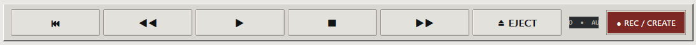
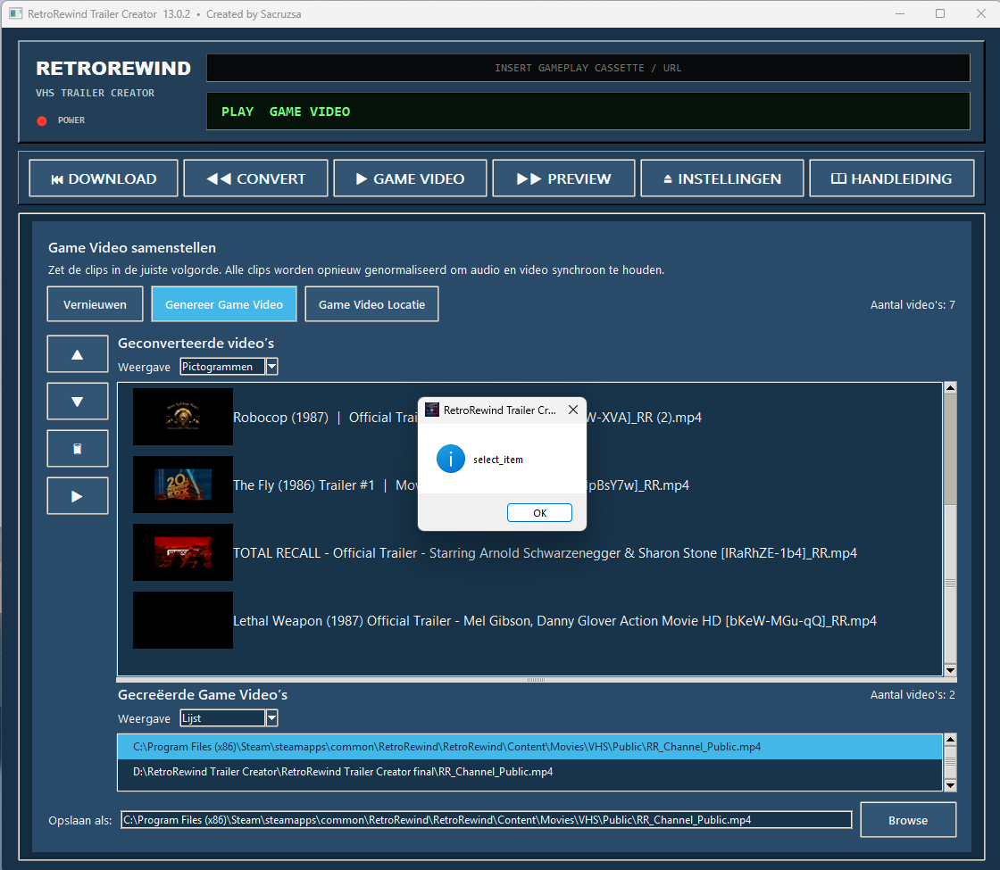
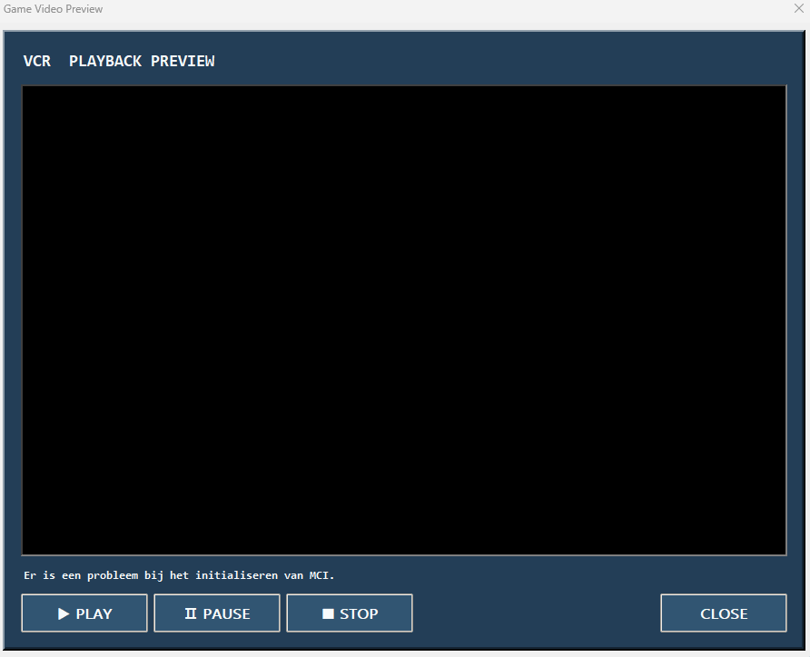
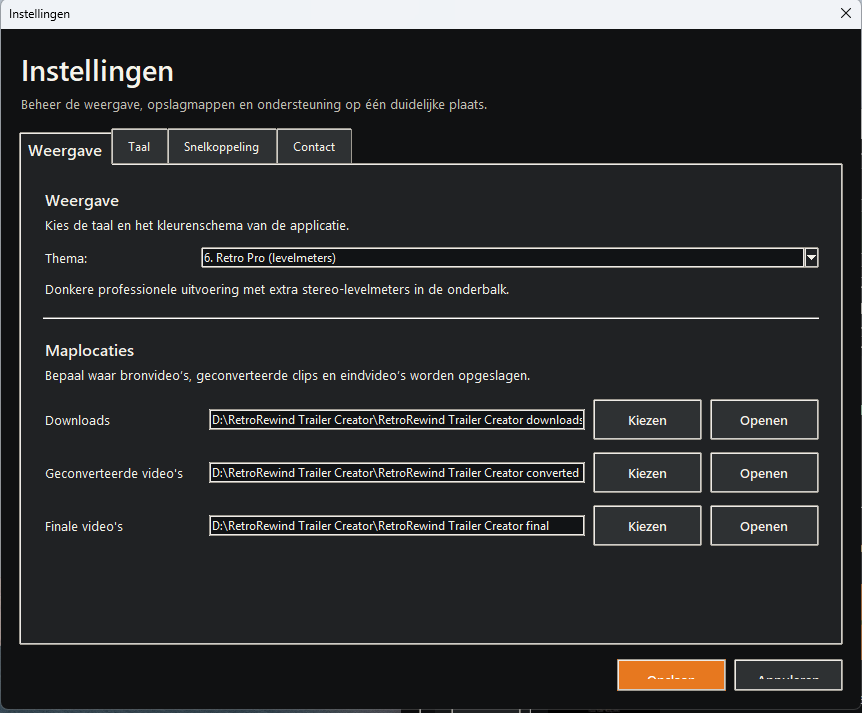

Created by Sacruzsa
⏮ Download opent downloads, ◀◀ Convert opent conversie, ▶ Game Video opent de samensteller, ▣ Video’s opent de videobibliotheek, ⏏ Instellingen opent de voorkeuren en 📖 Handleiding opent deze uitleg.

Plak één volledige YouTube-link per regel. Download start de verwerking. Open downloads opent de ingestelde downloadmap. Plakken, knippen, kopiëren, selecteren en wissen beheren de URL-lijst.
De bovenste helft toont bronvideo’s die geconverteerd kunnen worden. De onderste helft toont reeds geconverteerde video’s. Converteren maakt 512×512 MP4-bestanden met H.264, AAC stereo 48 kHz en 30 fps. De mapknoppen openen de ingestelde converted-map.
Vernieuwen laadt alle geconverteerde clips. ▲ en ▼ bepalen de volgorde. 🗑 verwijdert geselecteerde bronclips na bevestiging. ▶ maakt een tijdelijke preview van de volledige volgorde en opent die in de ingebouwde speler. REC genereert de definitieve Game Video. Game Video Locatie opent de ingestelde final-map en de Steam-map. Opslaan als en Browse bepalen het doelbestand.

De knop Video’s opent één popup met twee tabbladen. Converted video’s bevat alle geconverteerde clips. Game Video’s bevat alle gegenereerde RR_Channel_Public.mp4-bestanden. Selecteer een bestand en klik op Play of dubbelklik.
Play, Pause en Stop bedienen de speler. Gebruik −10s en +10s om te spoelen, de tijdlijn om te zoeken en de volumeregelaar voor het geluidsniveau. Beeld en audio worden na zoeken opnieuw gesynchroniseerd.

Beheer thema, taal, downloadmap, converted-map, final-map, snelkoppeling en contact. Taal- of themawijzigingen herstarten de interface veilig zodat alle onderdelen opnieuw worden opgebouwd.

Downloaden, converteren en genereren tonen een VCR-popup met status, digitaal spectrum en log. Sluit de applicatie niet tijdens een actieve verwerking. Gebruik alleen video’s waarvoor je toestemming hebt.
Preview heet nu Video’s en bevat afzonderlijke tabs voor conversies en Game Video’s. De Game Video-pagina toont alleen de clipvolgorde. ▶ previewt de volledige volgorde en de rode REC-knop genereert het eindbestand.